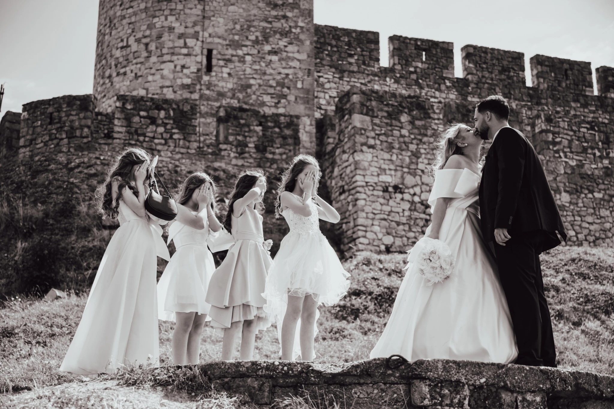

O MENI
Priče uhvaćene objektivom.
Ćao, ja sam Filip i fotografija je moj način da sačuvam trenutke koji imaju posebnu vrednost.
Moj cilj je da kroz objektiv zabeležim trenutke koji pričaju priču – od veselih rođendana i svadbi, preko korporativnih proslava i radionica, pa sve do pažljivo pripremljene hrane i dekoracije. Verujem da fotografija treba da prenese emociju i atmosferu, da bude uspomena kojoj se uvek vraćamo.